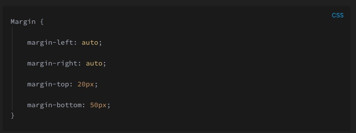
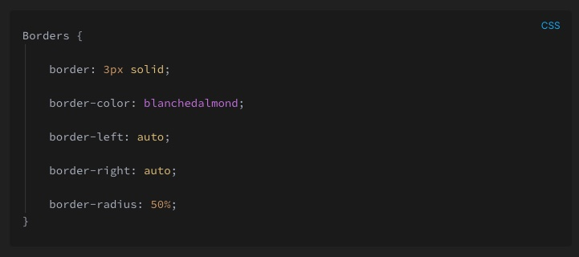
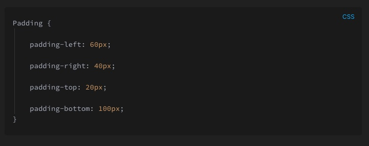

When it comes to margins there are lots of commands you can use depending on the size and location of the margin. To start, the ones you need to know are:
See the px ie 20px? That's reffering to how much space you want. You can also use percentages ie 30%. When you use % it is making the margin the percent of the width of you img or text. You can also use 'auto' meaning the browser calculates for you (usually if you wanted something centered you would do this for example on he left and right margin)
When it comes to borders there are lots of commands you can use depending on the border you want. For a example, the ones you might need to know are:
See that we're using px and % again? This time we're also also adding the color we want. Hot tip - the radius controls the curvature of the border.
When it comes to padding there are lots of commands you can use depending on the padding you want.To start, the ones you might need to know are:
See the px ie 20px? That's reffering to how much space you want. You can also use percentages ie 30%. When you use percentages it is making the margin the percent of the width of your img or text. You can also use 'auto' meaning the browser calculates for you (usually if you wanted something centered you would do this for example on he left and right padding). You might notice that I have used the same words here as when I described margins earlier! I'm not just being sneaky, it's just that they both use these rules! How great is that? Learn 1 and you know both.